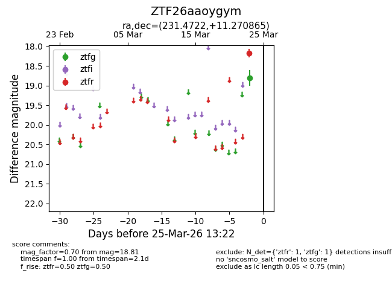
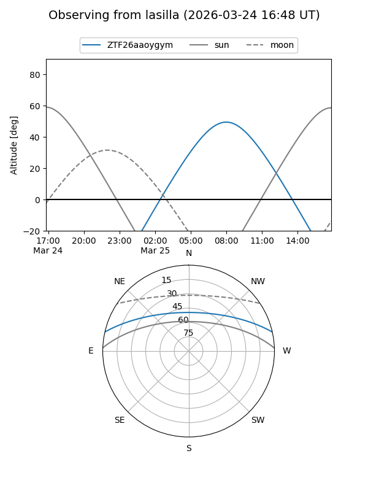
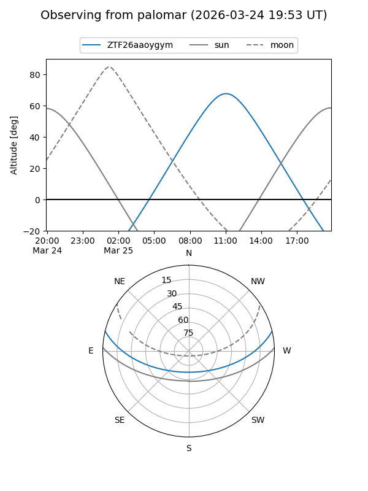

ZTF26aaoygym
Target ZTF26aaoygym at 2026-03-25 13:25
Aliases and brokers:
FINK: link
Lasair: link
ALeRCE: link
alt names
ZTF26aaoygym (ztf,fink_ztf)
Coordinates:
equatorial (ra, dec) = 231.4722,+11.27086
equatorial (HMS+DMS) = 15:25:53.33,+11:16:15.11
galactic (l, b) = (16.9331,+50.45544)
Flags:
Photometry:
last ztfg=18.81, ztfr=18.18
1 ztfg, 1 ztfr detections
Lightcurve

Visibility


Additional plots